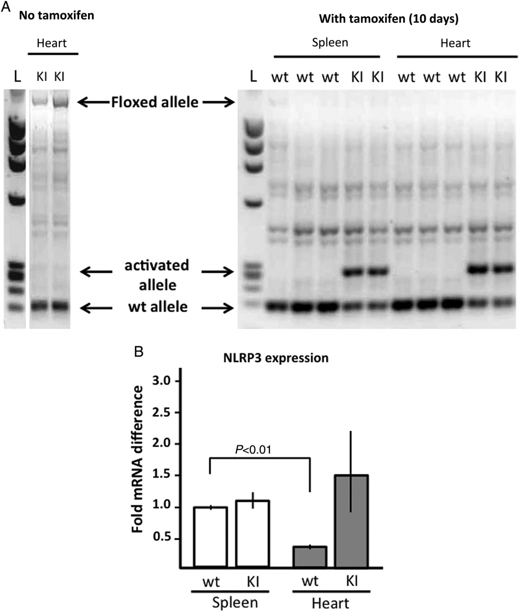
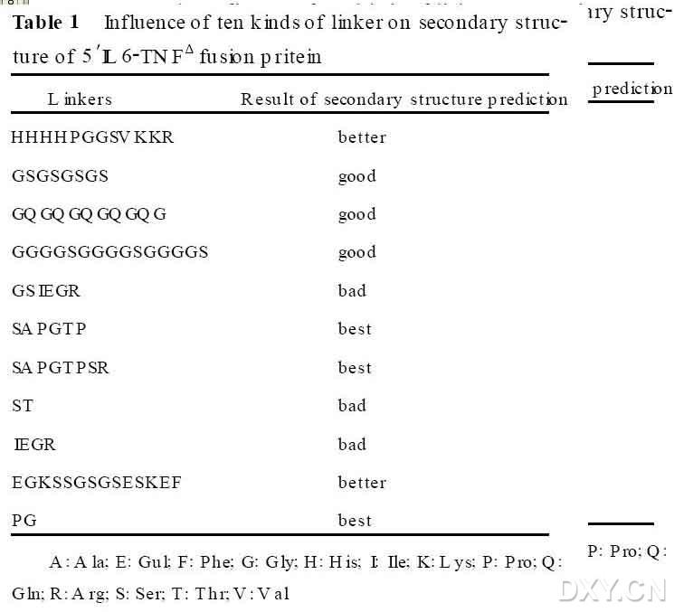
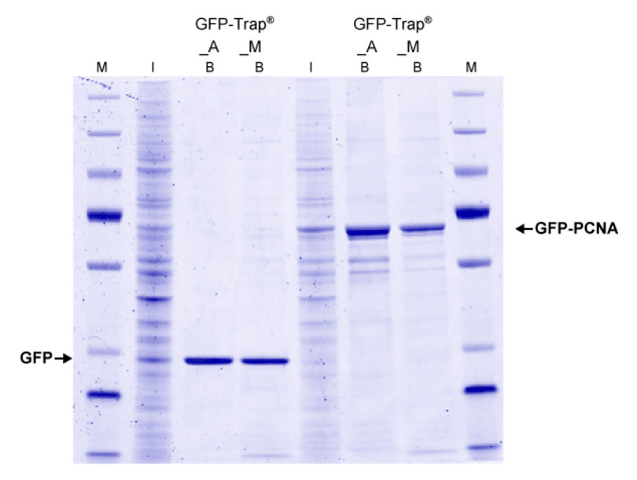
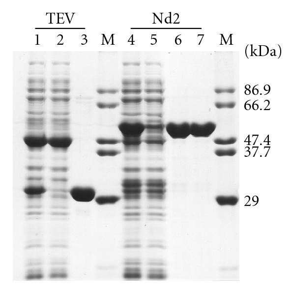
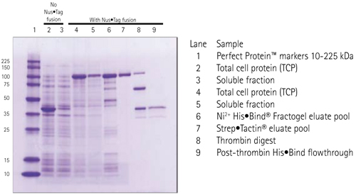
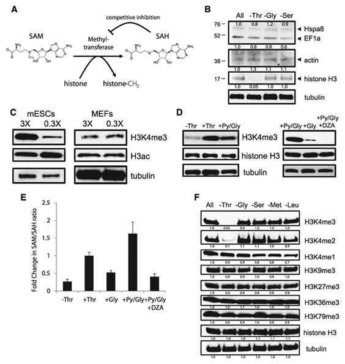

PAGE 图示例
URL
图片示例
 蛋白的linker的序列
click hereLeft (IP): Pulldown of GFP with GFP-Trap?_A and GFP-Trap?_M from 293T cell extracts. Input (I) and bound (B) fractions were separated by SDS-PAGE followed by Coomassie staining. Right (Co-IP): Pulldown of GFP-PCNA with GFP-Trap?_A and GFP-Trap?_M from 293T cell extracts. Other bands: potential interaction partners of PCNA.
 click here
click here
SDS-PAGE and time course analysis of catalytic activity on MBP-EGFP of sfGFP-TEV-His6 and TEV-His6. (a) One representative of SDS-PAGE analysis. 100?g MBP-EGFP was incubated with 2?g sfGFP-TEV-His6 Nd2. Lane 1 is the protein marker. Lanes 2�C11 represent different incubation time (0, 5, 10, 20, 40, 60, 90, 120, 180, 240 minutes, resp.).
 Novagen诺维信蛋白纯化：可溶表达、蛋白酶切、再纯化。Soluble annexin A1 was purified on sequential His?Bind and Strep?Tactin columns (lanes 6-7). The N-terminal fusion tags were removed by thrombin cleavage and a subtractive His?Bind column (lanes 8-9).
western blot
WB